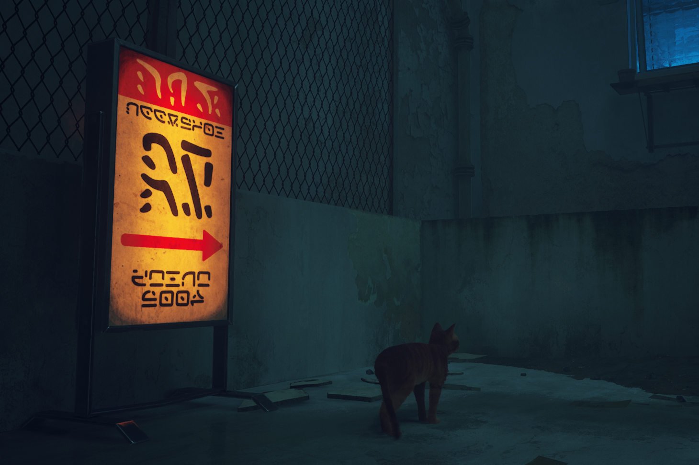
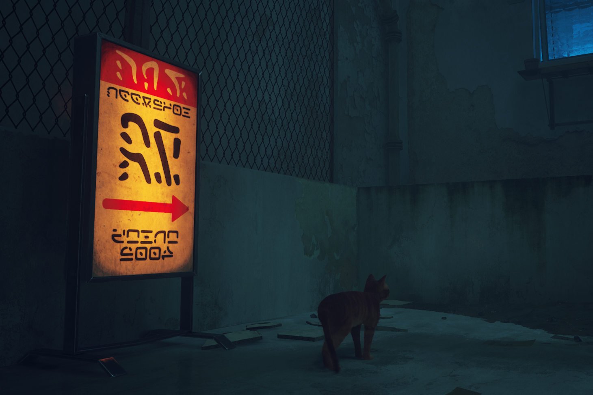
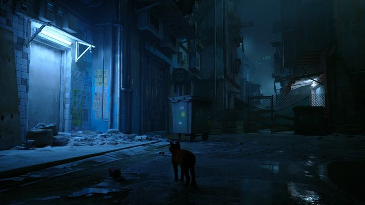
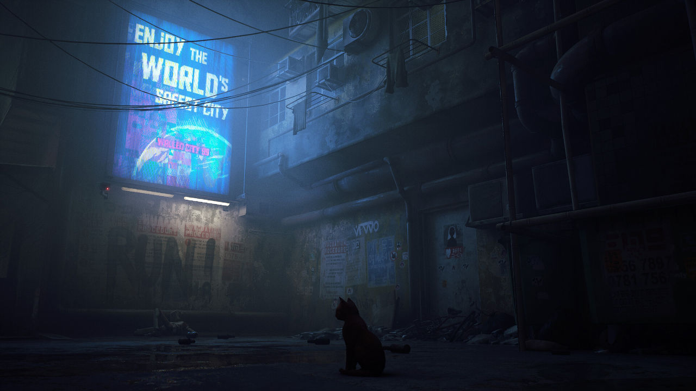
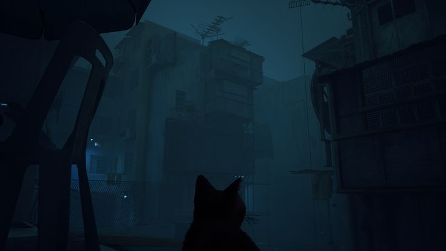
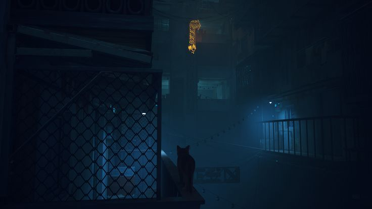
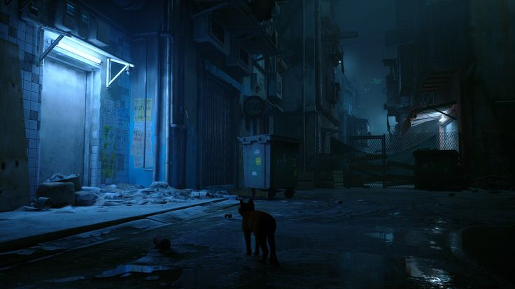
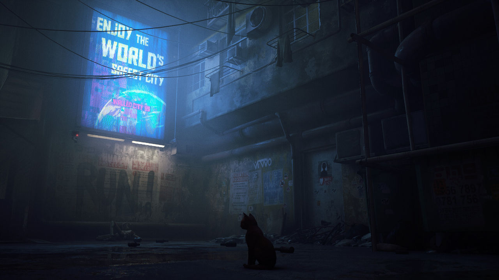
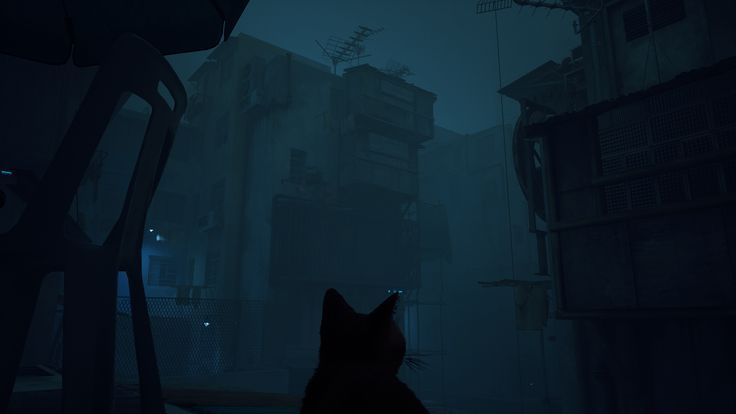
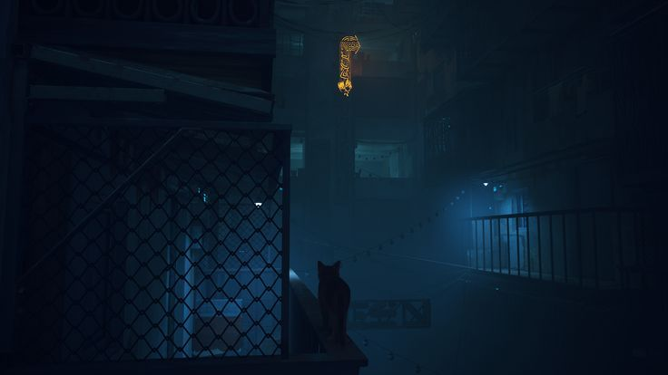

Bienvenido a Pomogato
Todos necesitamos un empujón para concentrarnos.
Pomogato es una página inspirada en los momentos de foco y descanso que propone la técnica
del método Pomodoro y en el juego
Stray, que combina calidez, entretenimiento y la tranquilidad que transmiten los gatos incluso en nuestra vida diaria.
Su objetivo es ayudar a las personas a organizar sus tiempos y mantener la concentración ofreciendo un
entorno visual relajante y motivador, como el
Virtual Cottage, el cual también fue nuestra inspiración.
Dentro del sitio encontrarás un temporizador Pomodoro interactivo, acompañado por sonidos suaves
y una estética felina diseñada
para hacer de la concentración una experiencia más cálida y divertida.
Este proyecto busca unir productividad, diseño y bienestar, y detrás
de cada sesión hay una meta clara:
que te concentres sin estrés.
Porque incluso en los días más agitados, siempre hay tiempo para una pausa… y un ronroneo. 🐾
 



 






